2013-2017 Population Analysis
Report Information
What is the Census Project?
The Census is a collaborative research project that started in 2002.
Although the BRC Census project is technically a survey and not a literal census (where data is collected from every member of a population), our methodology allows us to report on the entire population of Black Rock City (BRC), not just on the individuals who participate actively in our data collection efforts.
The results in this report are the most reliable estimates we have of the Black Rock City population. The true population values may differ slightly from the presented estimates due to random variation in the sampling process. This report contains data collected in 2017 and, when possible, comparable (weighted) data from 2013 through 2016.
While BRC Census has been producing reports since 2002, it is hard to compare recent data with reports from earlier years (before 2013) because of important differences in methodology — i.e., from a convenience sample of Census Lab visitors on-playa to a weighted online survey conducted post-event.
The BRC Census project is made possible through the extensive collective effort of volunteers, academic researchers, and Burning Man Project. Our thanks to everyone whose contributions went into the creation of this report!
Method and Weighting Procedures
A research ethics committee at Université du Québec à Montréal (previously at Denver University) has determined that the project meets the standards to protect respondents and their confidentiality.
Since 2013, the BRC Census team has collected data in two phases: a random sample during the event and a more comprehensive online survey after the event. During Burning Man, Census volunteers conduct the random sample by administering a short socio-demographic survey to randomly selected Burners who agree to participate.
After the event, announcements about the online survey are sent out via email lists, social media, the Burning Man website, etc. Some Burners participate but others do not, which introduces a self-selection bias in the survey results. To correct for this bias, the online survey results are adjusted (or “weighted”) based on the results of the random sample.
Weighting Variables
Eight variables are collected during the random sample. These are used later to weight the results of the online survey:
- Day of arrival
- Gender
- Age
- Virgin Burner or not
- US resident or not
- English as a first language or not
- US party affiliation (if eligible to vote in the US)
- Voting behavior (if eligible to vote in the US)
It is the goal of the BRC Census team to randomly sample 5-10% of the incoming population each year.
Weighted Results: an Example
In 2017, 70.2% of survey respondents were non-virgins, which was higher than the percentage of non-virgins observed in the random sample (63.8%). This means that non-virgins were "over-represented" (and virgins "under-represented") in the raw results of the online survey.
In other words, the random sample results show that the raw survey results are not an accurate representation of the overall BRC population:
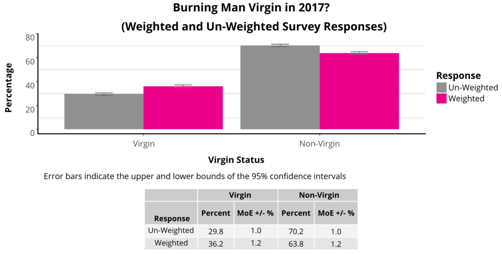
To correct for this known bias in the online survey data, random sample results are used to "weight" (or adjust) the online survey. These adjustments are applied throughout the entire online survey, giving more "weight" to the responses from under-represented groups and less "weight" to the responses from over-represented groups. The raw survey results only provide information about individuals who completed the online survey, but the weighted results represent the entire BRC population.
Data Collection via Online Survey
From 2013 to 2017, the number of submitted surveys (and the associated survey sampling rate) were:
| 2013 | 2014 | 2015 | 2016 | 2017 | |
|---|---|---|---|---|---|
| Total Number of Surveys | 11,919 | 11,676 | 9,585 | 7,137 | 9,168 |
| Survey Sampling Rate | 17% | 18% | 14% | 11% | 13% |
This "survey sampling rate" indicates the percentage of the BRC population who completed the online survey in a given year based on the population count reported in each annual Burning Man report.
While the survey sampling rate has fluctuated over the years, the sampling rate is consistently high enough to allow for year-to-year comparisons using the methodology described here. As a comparison, the American Community Survey (the largest population survey in the USA) has a sampling rate of approximately 2.5% (National Research Council, 2007).
The actual “response rate” for the online survey (i.e., the number of participants divided by the number of participants who were aware of the survey) cannot be calculated, as there is no way to know how many BRC citizens were reached during our promotion of the online survey.
Reading This Report
Plots and Tables

Error Bars and Confidence Intervals
![Error bars are the black I-shaped markers that overlay each data point on a line or bar plot: While each data point shows a weighted percentage, there is always some degree of uncertainty when estimating the characteristics of a population based on a sample of that population - in this case, the entire BRC population in a given year from the BRC citizens who provided data to BRC Census. The 95% confidence intervals indicated by these error bars help to show the degree of that uncertainty: there is a 95% probability that the upper and lower bounds of the I-shape contain the true value. They are a visual representation of the margin of error (shown in the “MoE +/- %” column in the data table) which measures the amount of “error” or uncertainty in the results of a survey conducted via random sample. On rare occasions due to rounding, values in this report may not follow this rule precisely. In the plot and table above, 36.2% of the 2017 BRC population were estimated to be Burning Man virgins according to the weighted survey results. It can be said with 95% confidence that the true virgin proportion of the BRC population is contained within the range between 34.3% and 38.1% (95% confidence intervals); roughly 36.2% plus or minus 2% (margin of error).](images/p008-003-page.png)
Year-to-Year Changes
![A note about year-to-year changes: When reviewing changes in a population over time, it is extremely important to remember that some reported changes will be due to sampling methodology (using weighted Census data to report on the BRC population) or measurement error, rather than being indicative of a consistently occurring change in the population. As a general rule, smaller differences from one year to another are more likely to be due to chance, while larger differences are more likely to be indicative of genuine changes in the BRC population. Additional caution should be taken in situations with larger confidence intervals, as they indicate less certainty as to the exact population proportion. For example, in the plot (right): • The light pink line for 16+ year Burners is relatively flat, with relatively small confidence intervals. The proportion of 16+ year Burners does not seem to have changed much from 2013-2017. • The bright pink line for virgin Burners shows larger changes from 2013-2017, but the confidence intervals are also larger. In some cases where the data points look relatively far apart from one year to the next, the confidence intervals for those years overlap. It is difficult to know if these changes are due to random chance or to other, more significant population trends. • The gray line for 1-2 Year Burners shows larger changes from 2014 to 2015, even taking into account the height of the confidence intervals. It is more likely, though not certain, that these changes are not due to random factors.](images/p009-004-page.png)
Y-Axis Breaks
![Sometimes, there is a large gap between responses from one category and responses from another category. For example, in the plot (right): • Over 85% of participants each year reported arriving at BRC through Gate. • The number of Burner Express Bus passengers has nearly doubled, but it is still between 6% and 12% for every year presented. • All other options have varied slightly from year to year, but they have all stayed below 2%. Displaying all of these results on a continuous percentage scale would be difficult. Without a very tall image, slanted lines would appear to be horizontal and the lines in the 0-2% range would overlap each other to such a degree as to become indistinguishable from one another. Dashed lines like the ones in the plot right indicate a “break” in the scale, to make these differences more visible to the eye. That means that while this plot shows the full range of responses from 0-100%, only the relevant ranges have been included. When viewing a plot with one or more y-axis breaks, it’s important to keep in mind that data displayed on either side of a break may represent different percentage ranges: while the gray line for Burner Express Bus and the purple line for BRC Airport are visually similar, they represent differently sized ranges: from 6% (+/- 0.6) to 10.7% (+/- 1.0) for the Burner Express Bus, and from 0.8% (+/- 0.2) to 1.6% (+/- 0.4) for BRC Airport.](images/p010-005-page.png)
Sociodemographic Characteristics
Black Rock City Total Population
Total BRC Population

From https://burningman.org/timeline/
Prior Burning Man Experience
Burns Attended
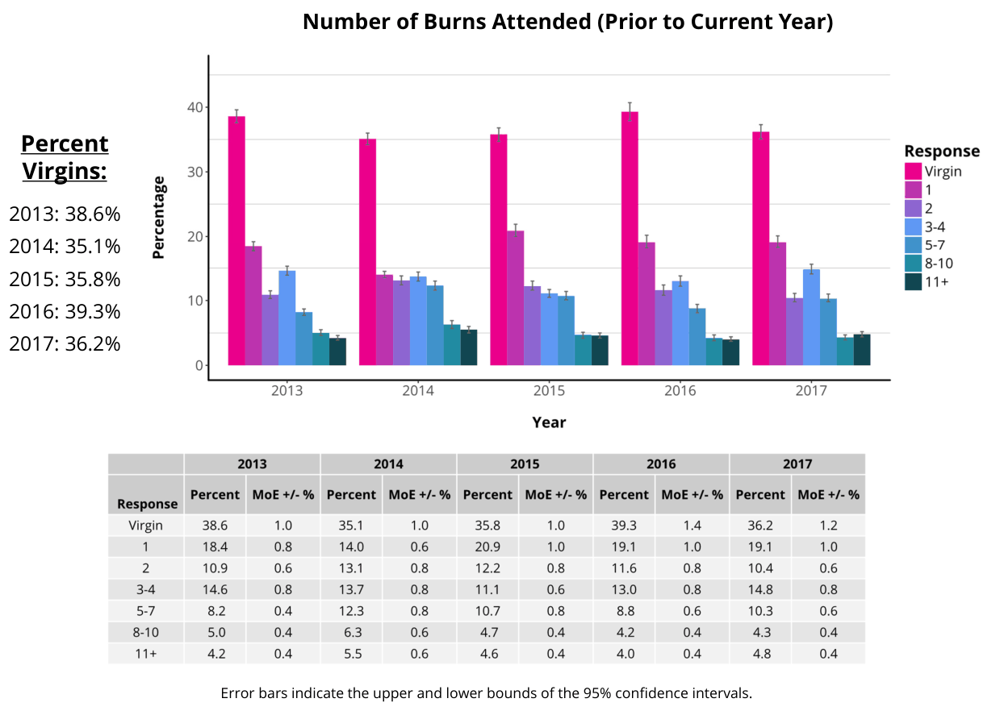
Years Since First Burn
Number of Years Since First Burn
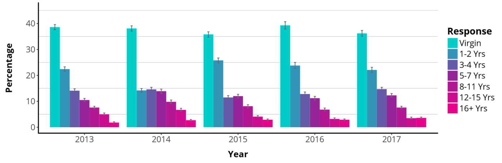
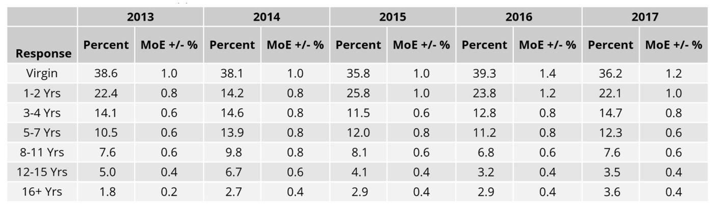
Because many Burners attend repeatedly, but not every year, the random sampling form and online survey both ask respondents to indicate each of the year(s) they have attended Burning Man.
Error bars indicate the upper and lower bounds of the 95% confidence intervals.
Age Groups
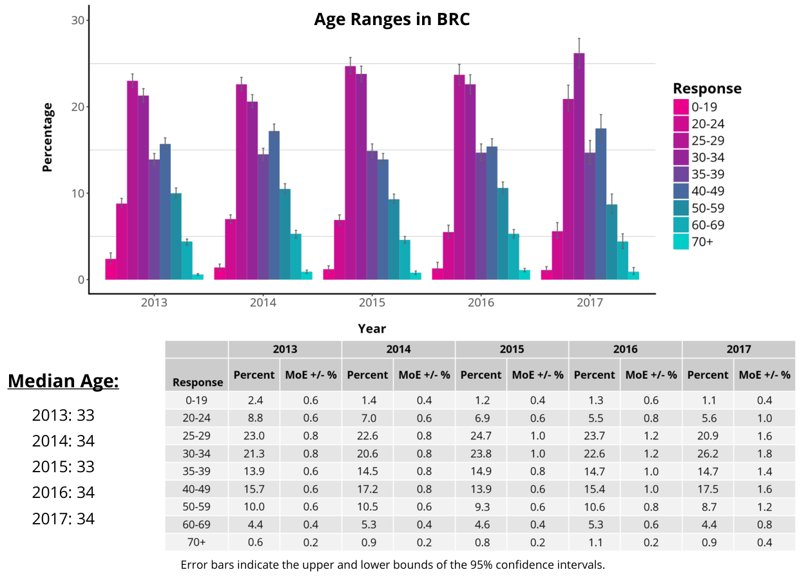
Education

Error bars indicate the upper and lower bounds of the 95% confidence intervals.
Personal Income
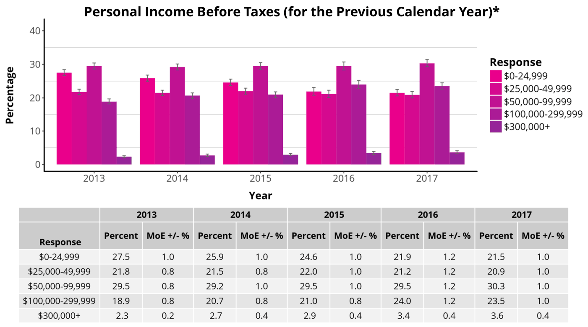
Median Personal Income:
2013: $51,100
2014: $53,900
2015: $54,900
2016: $60,000
2017: $60,700
* In the 2015-17 surveys, explanatory text was added requesting that respondents not include their spouse's income as their own. While this explanatory text was missing in 2013-14, all four years' surveys explicitly asked for the respondent's personal income before taxes in the previous calendar year.
Error bars indicate the upper and lower bounds of the 95% confidence intervals.
Household Income

2015: $89,400
2016: $94,200
2017: $94,900
The 2013 and 2014 online surveys did not include questions about household income, so data presented here are from 2015-17.
* This plot and table excludes a small number of participants who indicated being a member of a household but chose not to disclose their household income. For participants indicating no household membership, personal income and household income are identical values. Error bars indicate the upper and lower bounds of the 95% confidence intervals.
Current Gender
Male, Female, or Fluid/Both/Neither
Current Gender
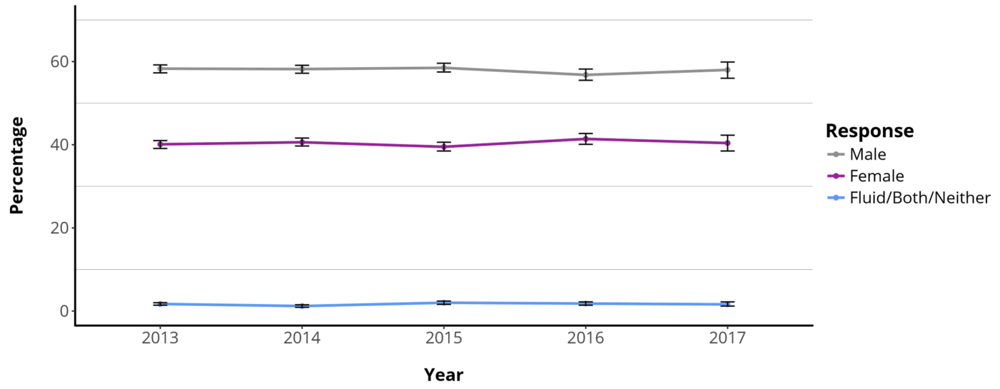

Additional questions about gender identity were included in each year’s online survey. See next page for detailed analysis.
Error bars indicate the upper and lower bounds of the 95% confidence intervals.
Additional Identities
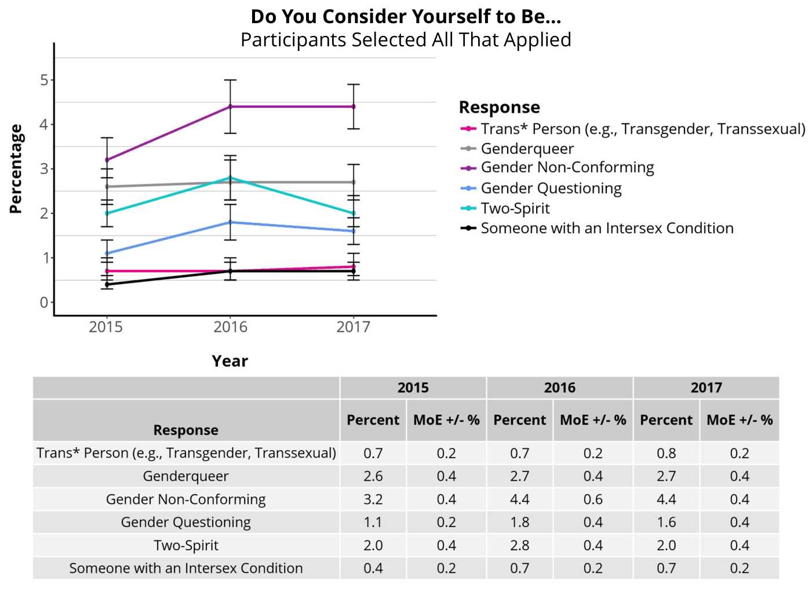
The 2013 and 2014 online surveys asked about gender identity differently, so direct comparison is impossible. Data presented here are from 2015-17.
Error bars indicate the upper and lower bounds of the 95% confidence intervals.
Sexuality
Attraction to Others
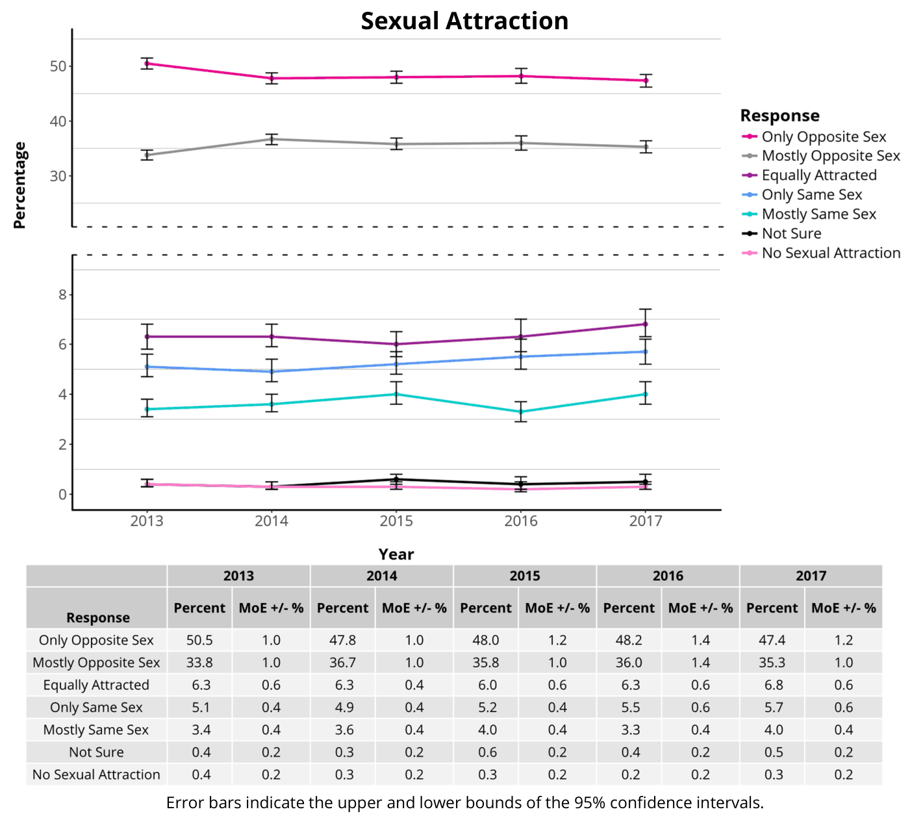
Sexual Orientation

Error bars indicate the upper and lower bounds of the 95% confidence intervals.
Gender Differences
Sexual Orientation by Current Gender
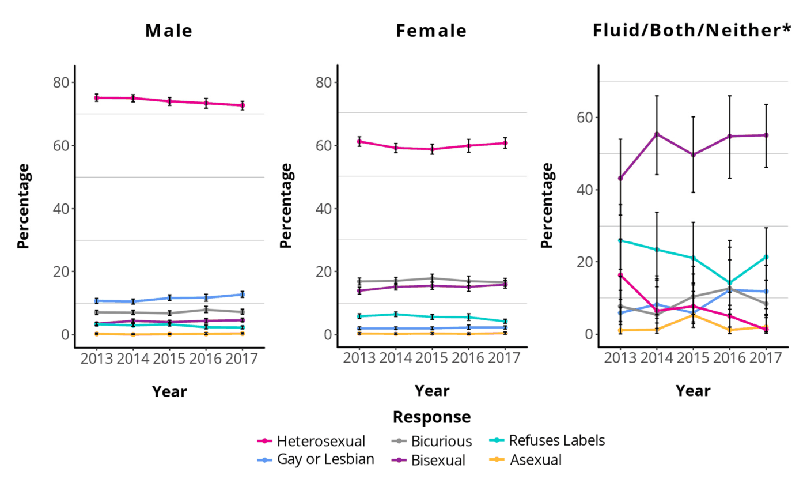
The data table corresponding to the plots above can be found on the next page of this report.
* The larger confidence intervals for participants in the “Fluid/Both/Neither” category compared to the “Male” and “Female” categories are mainly due to the substantially smaller number of individuals self-reporting this gender category.
Error bars indicate the upper and lower bounds of the 95% confidence intervals.
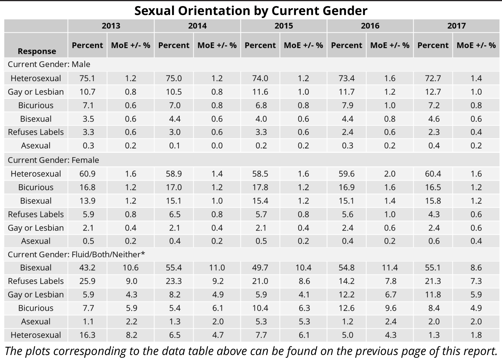
For each gender category, sexual orientation options are listed in order from highest to lowest percentage in 2017.
* The larger confidence intervals for participants in the “Fluid/Both/Neither” category compared to the “Male” and “Female” categories are due to the substantially smaller number of individuals self-reporting this gender category. Error bars indicate the upper and lower bounds of the 95% confidence intervals.
Additional Identities
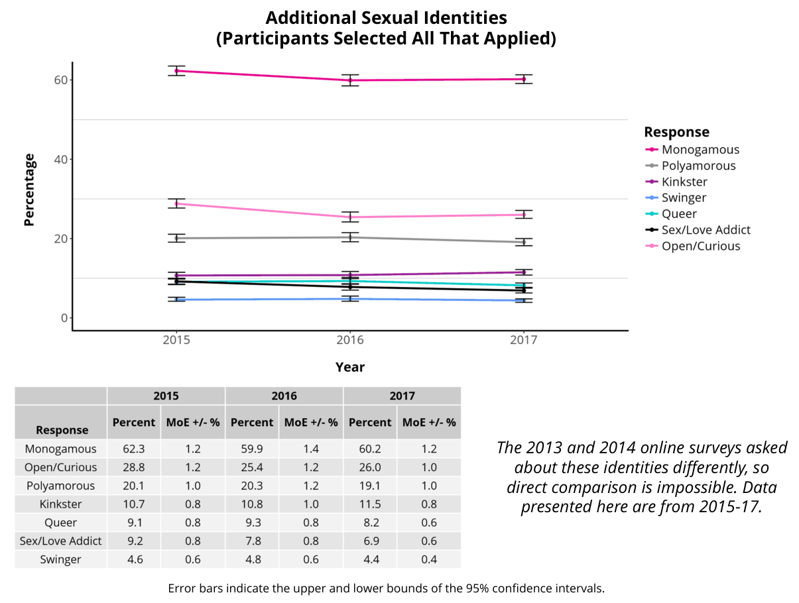
Relationships
Partnerships and Marital Status
Participant Responses to the Question, “In the Default World Do You Share Your Life with a Partner?”

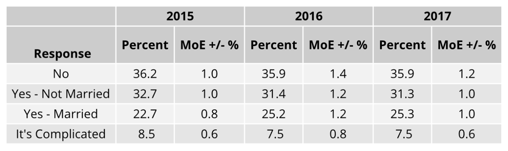
The 2013 and 2014 online surveys asked about relationships differently, so direct comparison is impossible. Data presented here are from 2015-17.
Error bars indicate the upper and lower bounds of the 95% confidence intervals.
Relationship Characteristics
Participant Responses to the Question, “Would You Describe Your Relationship as an Open Relationship?” (For Participants Reporting Sharing Life with a Partner)
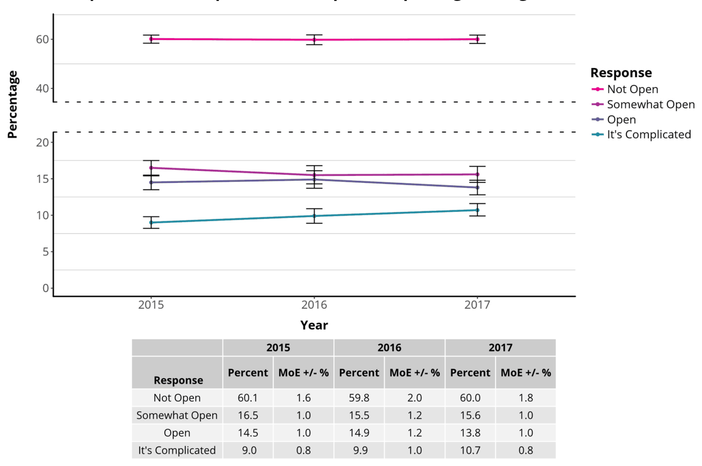
This question was not included in the 2013 and 2014 online surveys, so data presented here are from 2015-17.
Error bars indicate the upper and lower bounds of the 95% confidence intervals.
Religion and Spirituality
Spiritual Identity
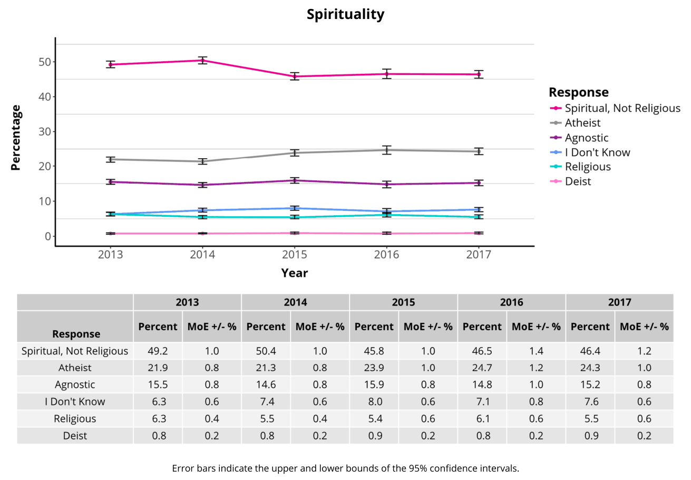
Religious Denomination
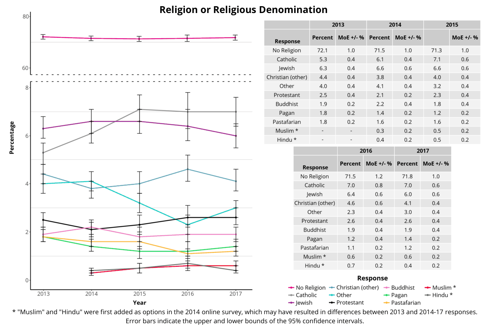
Current Residence
By Region
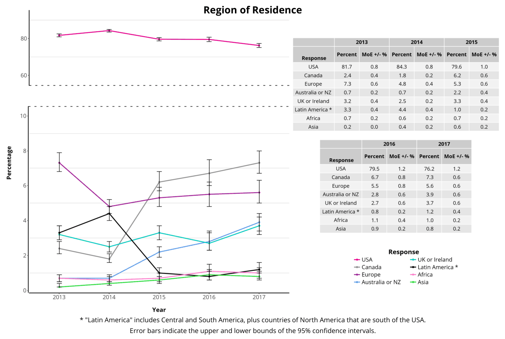
US Residents by State
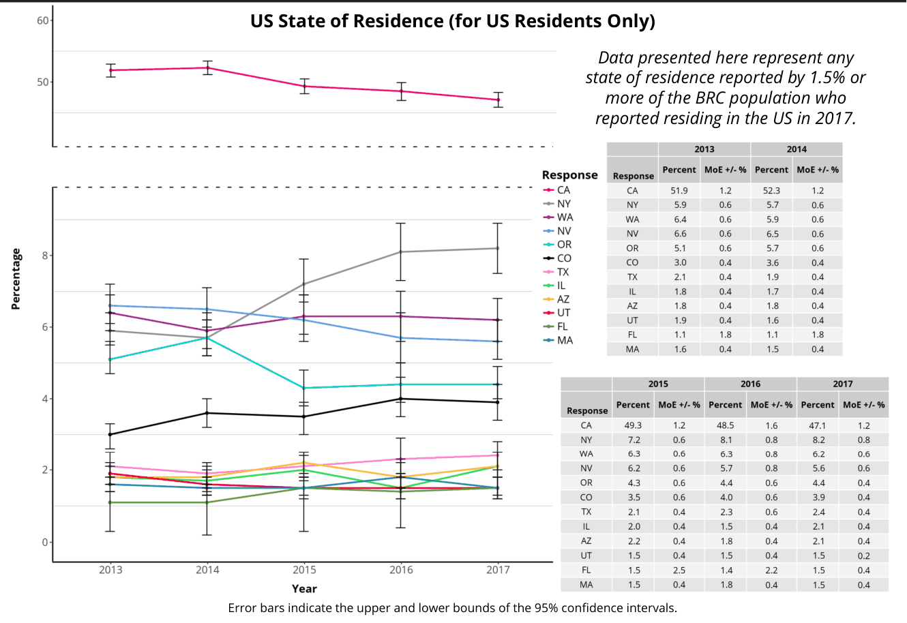
Language
![Native Language* * "Native language" was defined in the online survey as the first language learned and still used. ** The plot (left) and table (above) report data for any language reported by 1.0% or more of BRC residents in at least one year from 2013-17, including "Other" for residents whose native language was not listed in the online survey options. The listed language options excluded from the plot and table here are: Arabic, Danish, Farsi, Hindi, Japanese, Norwegian, Polish, Portuguese, Punjabi, Romanian, Swedish, Tagalog, and Urdu. Error bars indicate the upper and lower bounds of the 95% confidence intervals.](images/p032-029-page.png)
Political Self-Identity
Participant Responses to the Question, “Generally, I Consider Myself to be Primarily:”
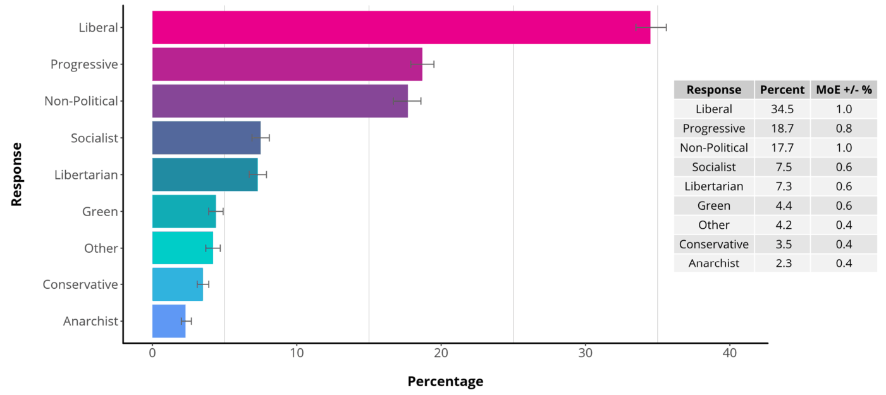
This question was first introduced in the 2017 online survey, so data presented here are from 2017 only.
Error bars indicate the upper and lower bounds of the 95% confidence intervals.
US Politics
Voting Behavior
US Voting History
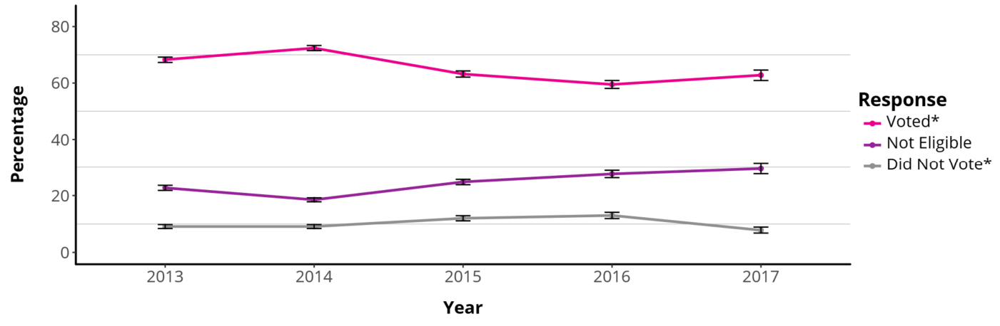

* Eligible voters in the "Voted" population indicated voting in 1+ US federal elections over the four years prior to the year of the survey. Eligible participants in the "Did Not Vote“ population indicated voting in 0 US federal elections over the same time period.
Error bars indicate the upper and lower bounds of the 95% confidence intervals.
Party Affiliation
![US Political Party Affiliation* * The plot and table above represent BRC participants who indicated eligibility to vote in the United States and selected one of the provided answer options. It excludes participants who indicated ineligibility to vote, or who indicated eligibility but declined to answer the online survey question about US political party affiliation. ** "American Independent Party (formerly America's Party)" was provided as an option in the 2013-16 online surveys but was removed in 2017, which may have impacted the frequency of other responses. Error bars indicate the upper and lower bounds of the 95% confidence intervals.](images/p035-033-page.png)
Ethnoracial Characteristics
Ethnoracial Characteristics
Ethnoracial Background
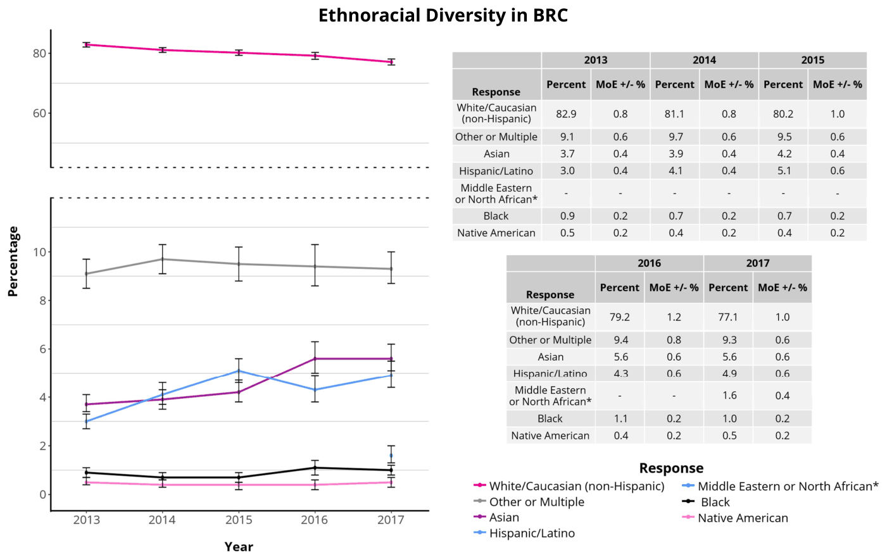
* "Middle Eastern or North African" was added as an option in the 2017 online survey, which may have resulted in decreases in the "White/Caucasian" and "Other or Multiple" categories.
Error bars indicate the upper and lower bounds of the 95% confidence intervals.
Self-Identity
Self-Identity as a Person of Color
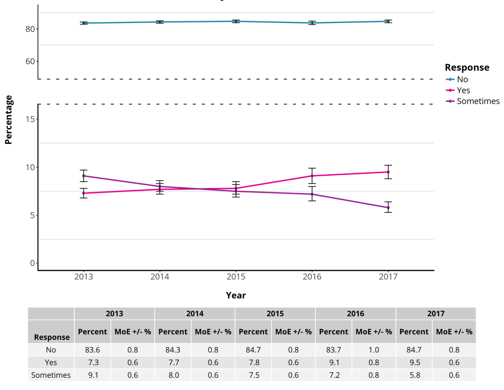
Error bars indicate the upper and lower bounds of the 95% confidence intervals.
Additional Population Characteristics
Self-Identity as an Artist
Participant Responses to the Question, “Do You Consider Yourself an Artist?”
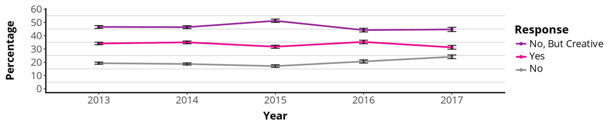
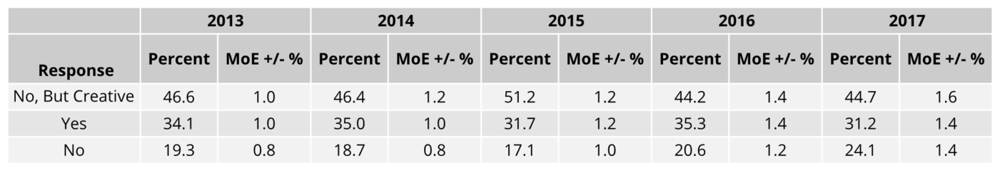
Error bars indicate the upper and lower bounds of the 95% confidence intervals.
Self-Identity as a Burner
Participant Responses to the Question, “Do You Identify as a Burner?”
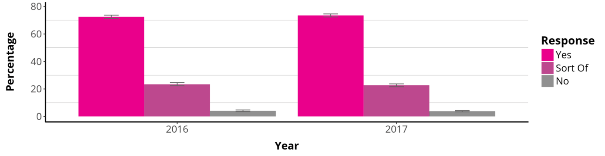
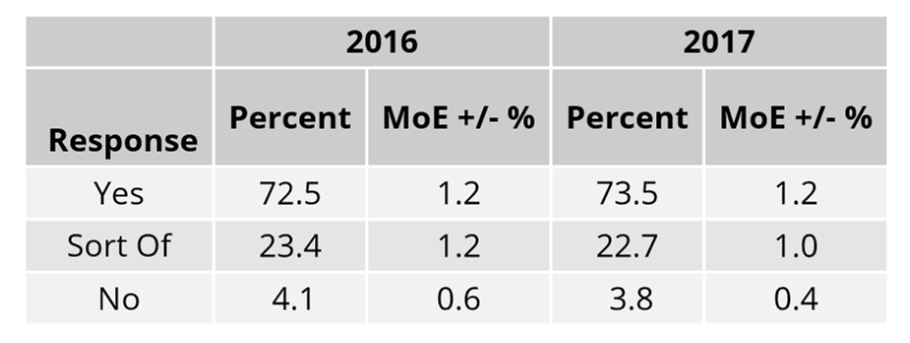
This question was first introduced in the 2016 online survey, so data presented here are from 2016-17.
Error bars indicate the upper and lower bounds of the 95% confidence intervals.
Relationship with Others
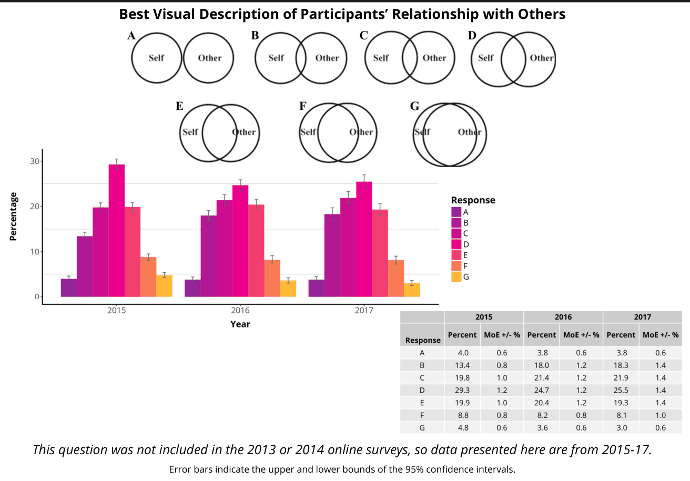
Perception of Others
Degree of Participants’ Agreement With the Statement, “I Assume That People Have Only the Best Intentions”
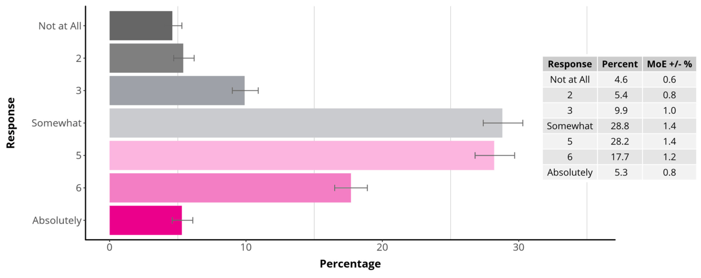
This question was not included in the 2013 or 2014 online surveys and asked differently in the 2015 and 2016 online surveys, so direct comparison is impossible. Data presented here are from 2017 only.
Error bars indicate the upper and lower bounds of the 95% confidence intervals.
Reasons for Attending Burning Man
![Reasons for Attending Burning Man this Year (Participants Selected Up to Three Options) * In the online survey this option was worded as "To be with friends or like- minded people / feel a sense of belonging." ** In the online survey this option was worded as "To satisfy my curiosity / check it off my ‘bucket list.’” This question was not included in the 2013 or 2014 online surveys, so data presented here are from 2015-17. Error bars indicate the upper and lower bounds of the 95% confidence intervals.](images/p044-042-page.png)
Volunteerism and Skill Acquisition
Volunteerism and Skill Acquisition
Volunteerism in the Prior Year
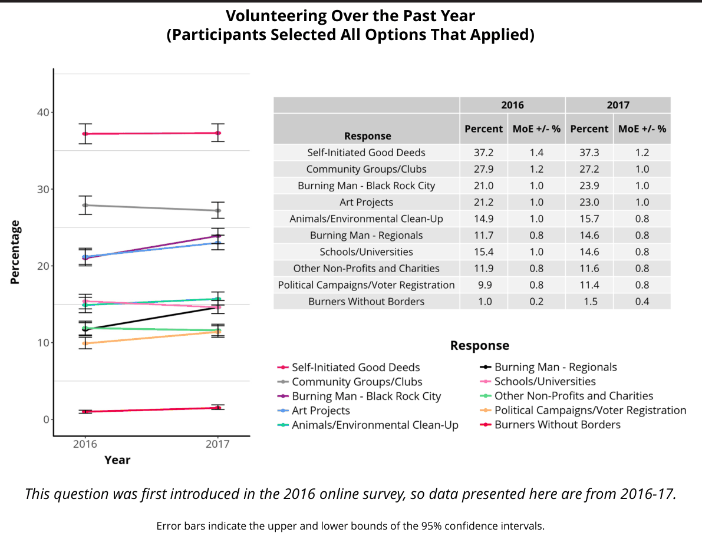
Volunteerism Inspired by Burning Man
Participant Responses to the Question, “After Going to BRC, Were You Inspired to do More Volunteering in General?”
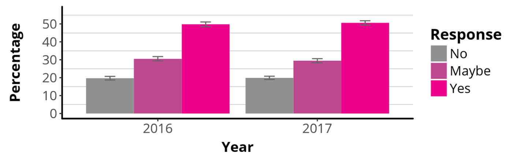
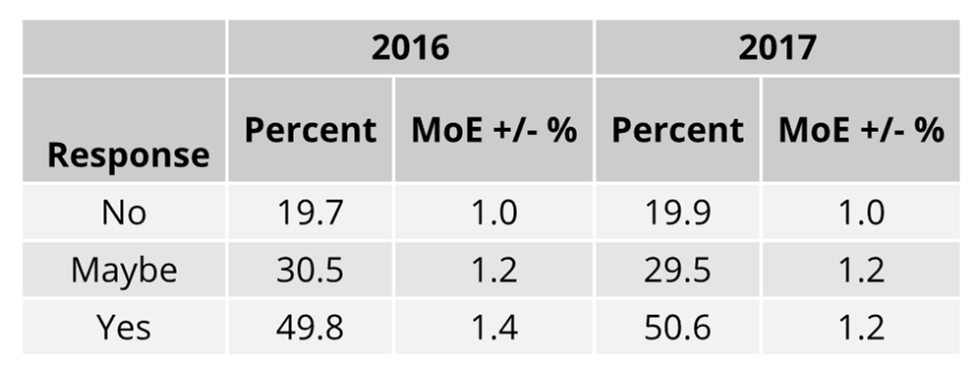
This question was first introduced in the 2016 online survey, so data presented here are from 2016-17.
Error bars indicate the upper and lower bounds of the 95% confidence intervals.
Learning Inspired by Burning Man
Participant Responses to the Question, “After Going to BRC, Were You Inspired to Learn or Practice Any of the Following Skills?” (Participants Selected All Options That Applied)
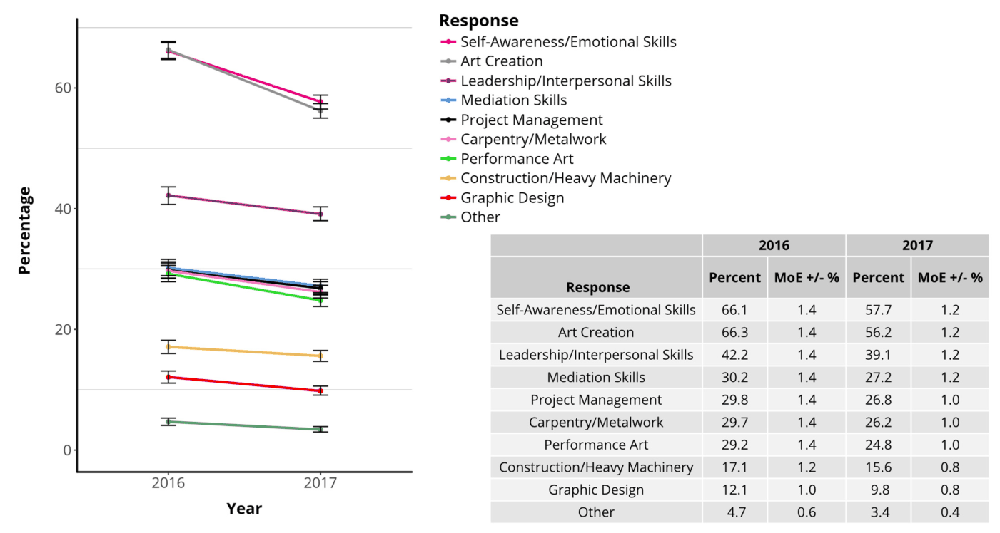
This question was first introduced in the 2016 online survey, so data presented here are from 2016-17. See the next two pages for participants’ evaluation of the application of these skills in the default world.
Error bars indicate the upper and lower bounds of the 95% confidence intervals.
Burning Man-Inspired Skills in the Default World
Participant Evaluation of the Default World Usefulness of Skills Learned and/or Practiced After Going to BRC (for Participants Who Felt Inspired to Learn/Practice Skills)
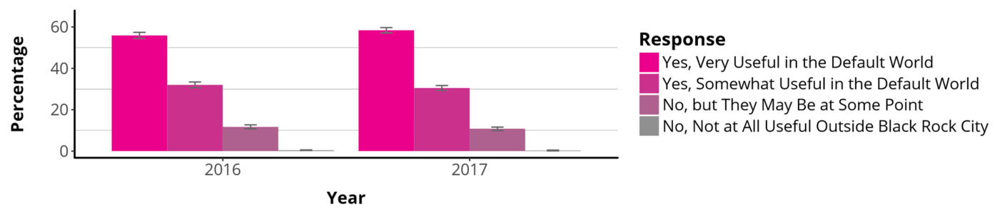
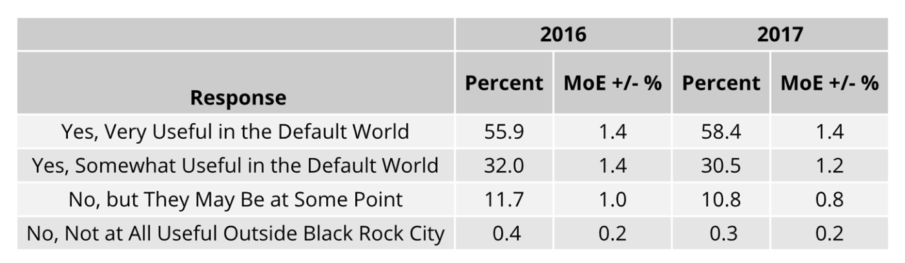
This question was first introduced in the 2016 online survey, so data presented here are from 2016-17.
See the previous page for examples of the types of skills learned and/or practiced, and the next page for default world application(s) of these skills.
Error bars indicate the upper and lower bounds of the 95% confidence intervals.
Burning Man-Inspired Skills Used Outside of BRC
Use of Skills Learned and/or Practiced After Going to BRC (for Participants Who Felt Inspired to Learn/Practice Skills, Participants Selected All Options That Applied)
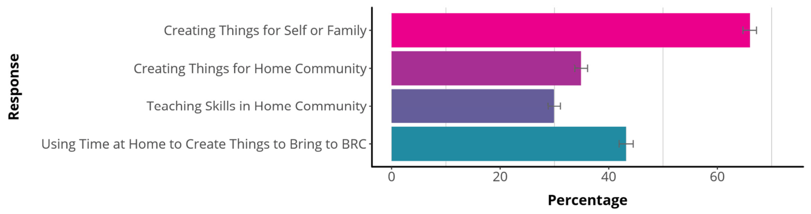
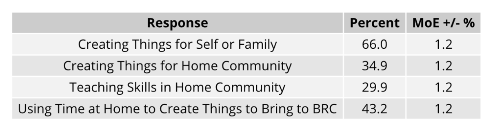
This question was first introduced in the 2017 online survey, so data presented here are from 2017 only.
See the previous page for examples of the types of skills, and the page before that for examples of the types of skills learned and/or practiced.
Error bars indicate the upper and lower bounds of the 95% confidence intervals.
Certifications Earned and Used
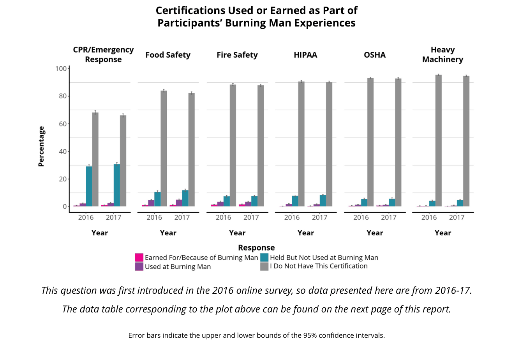
Certifications Used or Earned as Part of Participants’ Burning Man Experiences
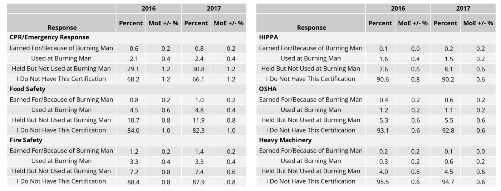
This question was first introduced in the 2016 online survey, so data presented here are from 2016-17.
The plot corresponding to the data table above can be found on the previous page of this report.
Error bars indicate the upper and lower bounds of the 95% confidence intervals.
Burning Man’s Ten Principles
Ten Principles
Practice in Everyday Life
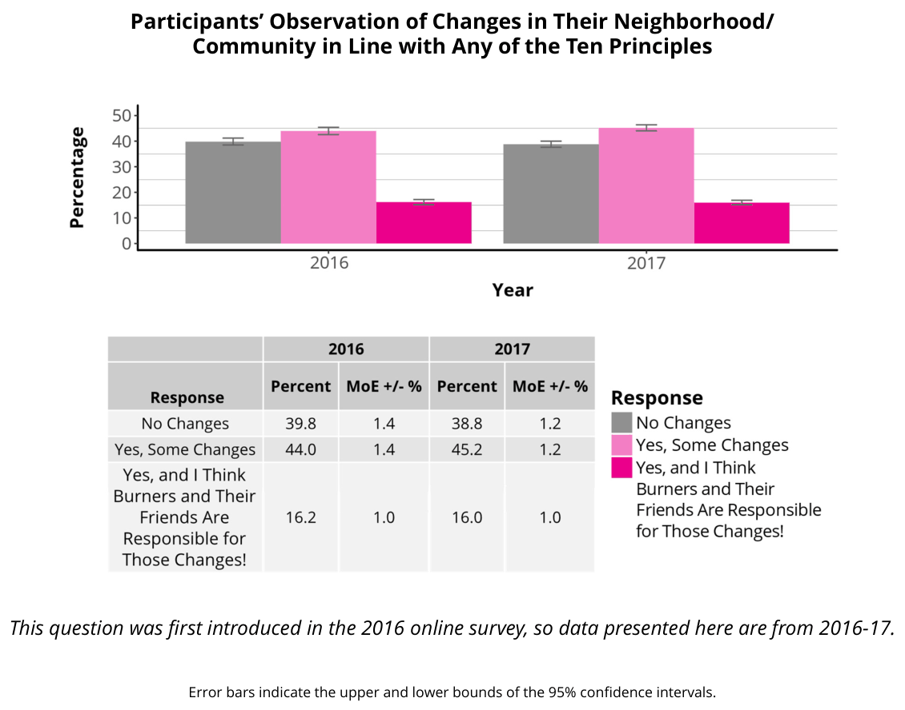
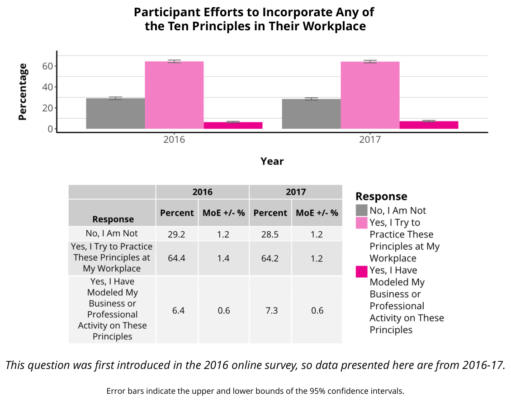
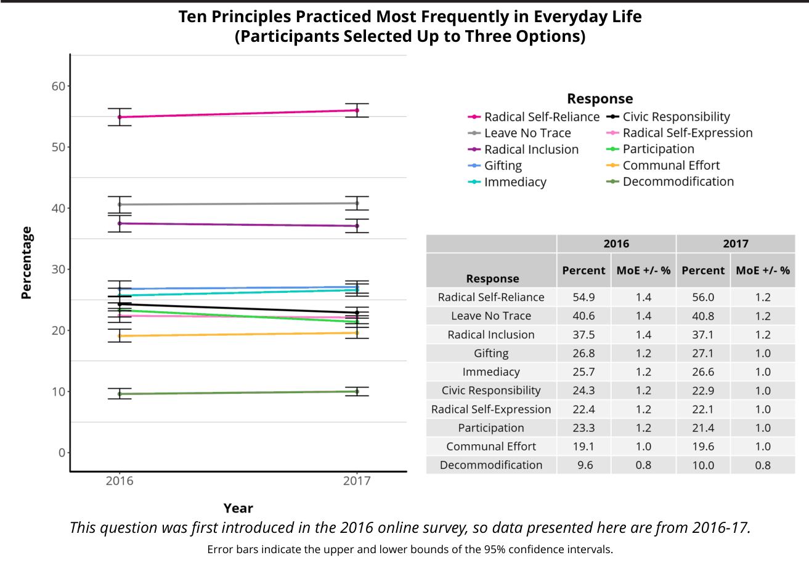
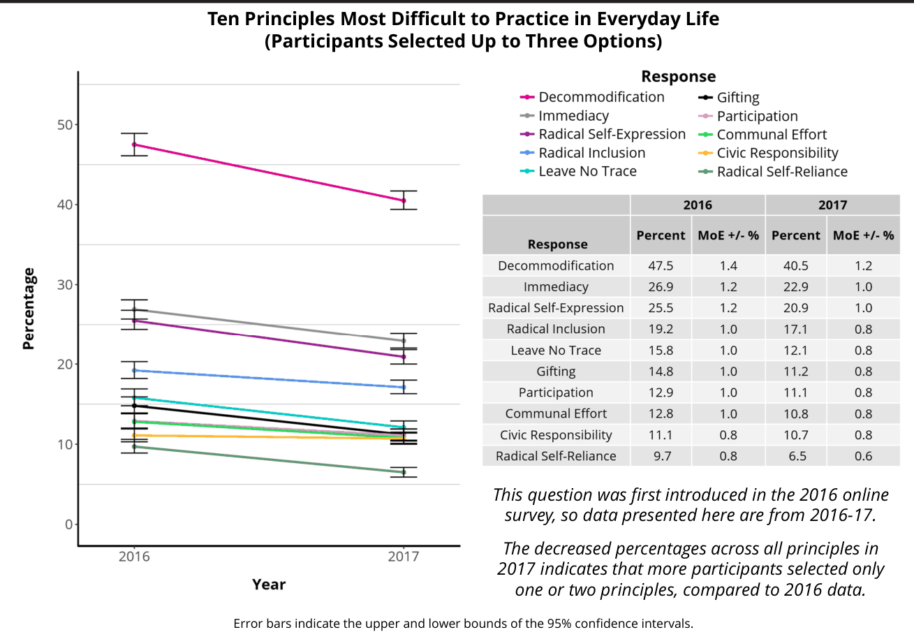
Participant Perceptions
Participant Responses to the Question, “How Important Are the Ten Principles to You?”
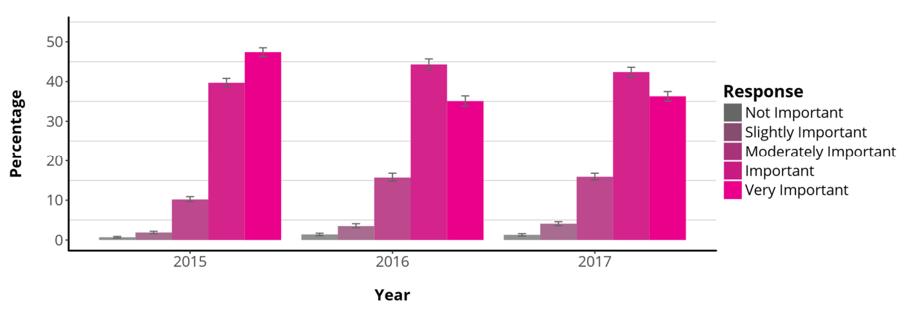

This question was not included in the 2013 or 2014 online surveys, so data presented here are from 2015-17.
Error bars indicate the upper and lower bounds of the 95% confidence intervals.
Participant Responses to the Question, “How Essential Are the Ten Principles to Creating An Authentic Burning Man Experience?”

This question was not included in the 2013 or 2014 online surveys, so data presented here are from 2015-17.
Error bars indicate the upper and lower bounds of the 95% confidence intervals.
Burning Man Expenses and Tickets
Spending for Burning Man
![Amount of Money (USD) Spent to Go to Burning Man (Excluding Ticket Price) This question was not included in the 2013 online survey, so data presented here are from 2014-17. Participants were asked to provide their best estimate (in US dollars) of how much they spent to go to Black Rock City and return, including fuel, food, lodging, airfare, supplies, etc., but excluding the cost of their Burning Man ticket. 80th Median: Percentile: 2014*: $1300 $2500 2015: $1500 $2600 2016: $1500 $3000 2017: $1500 $3000 * The 2014 online survey asked about spending ranges, but did not ask for total amount spent, so percentile data for 2014 was estimated differently than for 2015-17. Error bars indicate the upper and lower bounds of the 95% confidence intervals.](images/p061-060-page.png)
Ticket Cost
Burning Man Ticket Cost
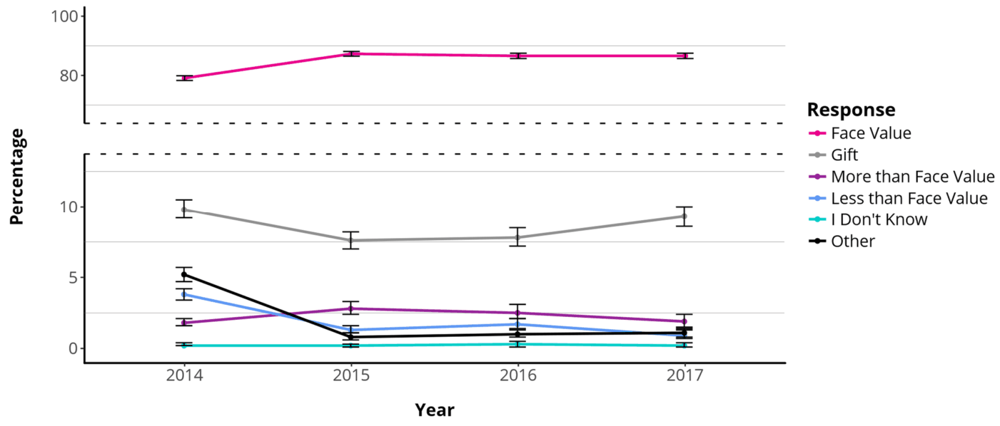

This question was not included in the 2013 online survey, so data presented here are from 2014-17.
Error bars indicate the upper and lower bounds of the 95% confidence intervals.
Ticket Source
2017 Ticket Data
2017 Burning Man Ticket Source
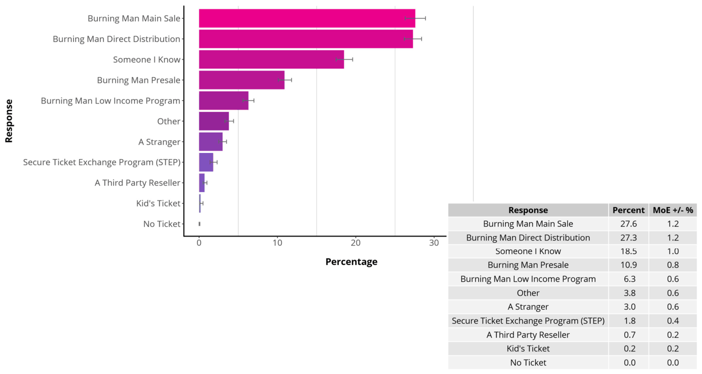
The 2017 online survey listed these options differently than they have been listed in past years’ surveys, so data presented here are from 2017. For 2015-16 ticket source data, see the next page of this report.
Error bars indicate the upper and lower bounds of the 95% confidence intervals.
2015-2016 Ticket Data
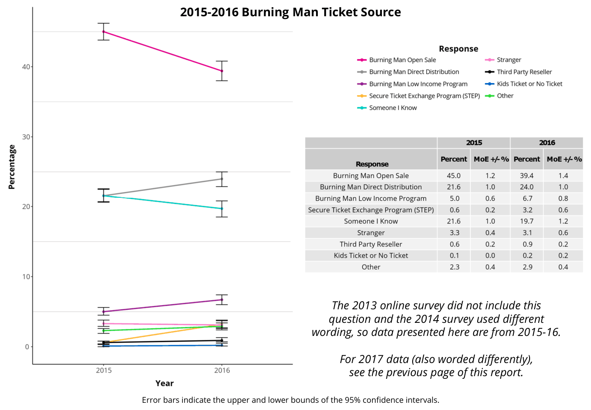
Factors for Non-Attendance

Impacts on Nevada
Economic Impact on Nevada
Spending Ranges
Spending Ranges for Total Expenses In Nevada
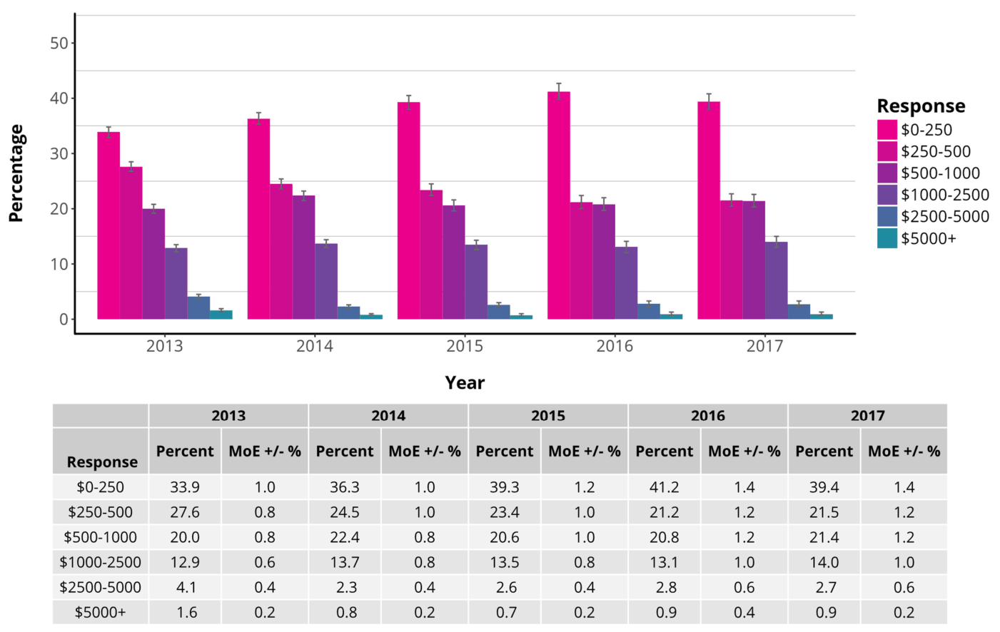
Error bars indicate the upper and lower bounds of the 95% confidence intervals.
Spending by Category
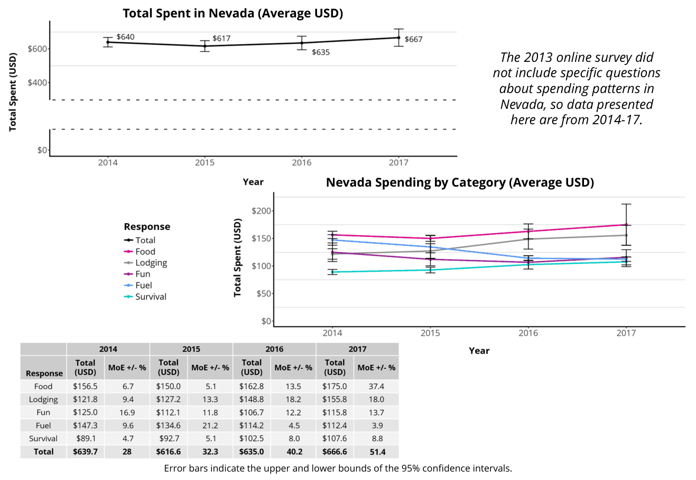
Impacted Cities and Neighborhoods
![Number of Participants Reporting Stops in Nevada Cities or Communities on the Way to/from Burning Man* This question was first introduced in the 2017 online survey, so data displayed here are from 2017 only. * As this data is collected qualitatively (participants are asked to type community and city names into an open text box in the online survey) it is likely that these estimates are lower than the true number of visitors to each of the named cities or communities. Error bars indicate the upper and lower bounds of the 95% confidence intervals.](images/p069-068-page.png)
Other Recreational Stops
Parks and Recreation Areas
Visits to Parks and/or Recreation Areas This Year en Route to and/or from Black Rock City
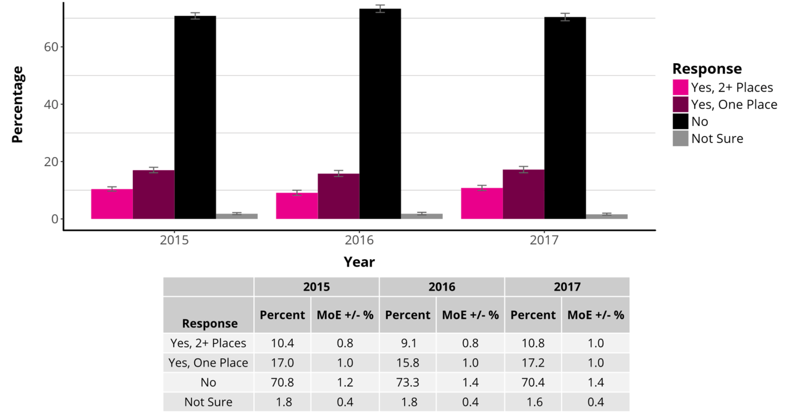
The 2013 and 2014 online surveys included differently worded questions about park visits, so direct comparison is impossible. Data presented here are from 2015-17. In 2013 and 2014 respectively, 68.8% (+/- 1.0) and 73.5% (+/- 0.9) of participants did not visit any parks or recreation areas, and 2.9% (+/- 0.4) and 1.7% (+/- 0.3) were not sure.
Error bars indicate the upper and lower bounds of the 95% confidence intervals.
Activities at Public Lands
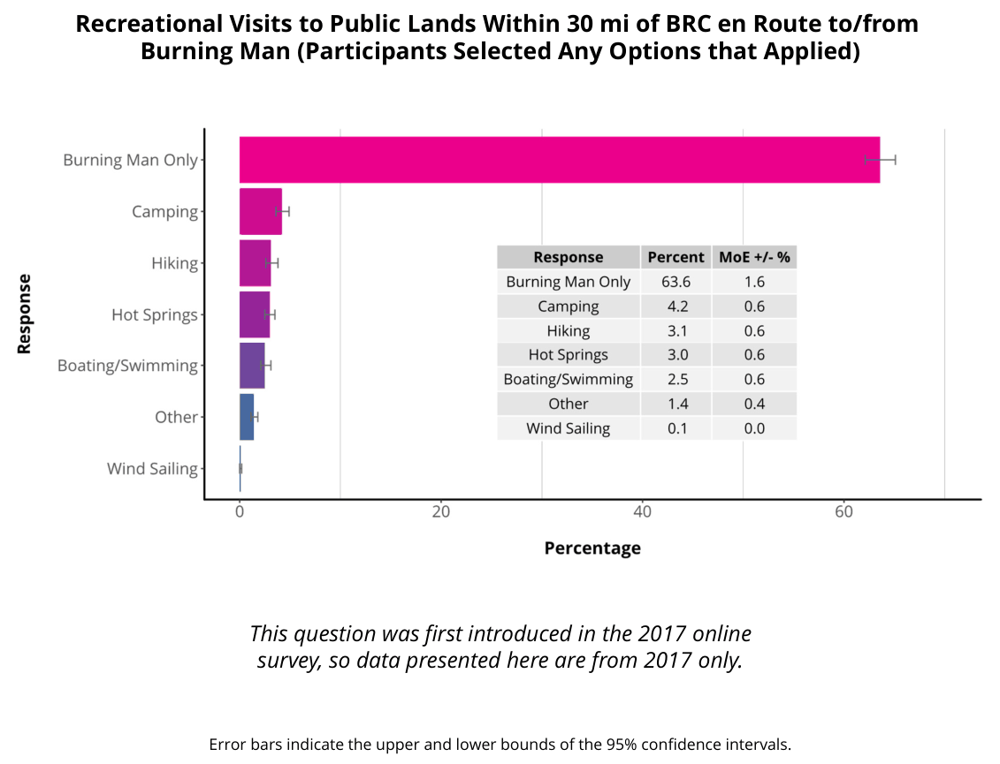
Intent to Return to the Black Rock Desert
Participant Responses to the Question, “Do You Intend to Come Back to the Black Rock Desert Outside of Burning Man?”
This question was first introduced in the 2017 online survey, so data presented here are from 2017 only.
Error bars indicate the upper and lower bounds of the 95% confidence intervals.
Benefits to Participation
Benefits to Participation
Project Description
The online survey in 2017 introduced a set of new and exciting research questions related to the personal and environmental benefits that can be attained through the activities taking place in BRC, and with the factors contributing to these experiences and benefits.
Questions in this set were duplicated, with permission, from surveys used by recreation researchers studying the benefits of recreation on public lands administered by the Bureau of Land Management (BLM). Duplicating these survey questions allows for the possibility of future research in which survey responses from Burning Man may be compared with survey responses from other public lands administered by the BLM.
The first of these duplicated questions in the 2017 online survey was: People attain benefits from participating in activities in Black Rock City. First, indicate how desirable each of the following benefits were to you as an outcome of your recent trip. Then, rate the degree to which you were able to attain each benefit as a result of the trip.
Fifteen potential personal benefits were included, with five benefits displayed on each of the next three pages of this report. Potential benefits are listed in order from highest to lowest percentage of participants indicating a benefit as being "Very High" on the desirability scale.
The second question was: Environmental benefits may accrue to local or regional communities from activities occurring in Black Rock City. First, indicate how desirable it is to you that your local/regional communities realize each of the following benefits as a result of your experience in Black Rock City. Then, rate the degree to which you believe your local/regional communities actually attain/realize these benefits.
Six potential environmental benefits were included, all presented on the fourth page of this section.
The final question from this set was: To what extent did each of the following contribute to your experience and benefits while visiting Black Rock City?
Nine possible contributing factors are presented on the fifth, and final, page of this section of this report.
Personal Benefits, Part 1
Personal Benefits, Part 2
![Desirability and Attainment of Personal Benefits: Part 2 of 3 (15 Potential Personal Benefits, Ordered by Highest Desirability*) * Potential benefits are listed in order from highest to lowest percentage of participants indicating a benefit as being "Very High" on the desirability scale. ** In the online survey this option was worded as "Greater sensitivity to/awareness of outdoor aesthetics, nature’s art, and its elegance." Error bars indicate the upper and lower bounds of the 95% confidence intervals.](images/p076-074-page.png)
Personal Benefits, Part 3
![Desirability and Attainment of Personal Benefits: Part 3 of 3 (15 Potential Personal Benefits, Ordered by Highest Desirability*) * Potential benefits are listed in order from highest to lowest percentage of participants indicating a benefit as being "Very High" on the desirability scale. ** In the online survey this option was worded as "Enlarged understanding of personal responsibility to help care for community and keep it clean." Error bars indicate the upper and lower bounds of the 95% confidence intervals.](images/p077-075-page.png)
Environmental Benefits

Contributing Factors
Impressions of Black Rock City
Feelings of Enjoyment
Participant Responses to the Question, “How Much Did You Enjoy Your Experience This Year in Black Rock City?”
Error bars indicate the upper and lower bounds of the 95% confidence intervals.
Feelings of Safety
Participant Responses to the Question, “Did You Feel Safe in Black Rock City This Year?”
This question was not included in the 2013 or 2014 online surveys, so data presented here are from 2015-17.
Error bars indicate the upper and lower bounds of the 95% confidence intervals.
Feelings of Connection
Participant Responses to the Question, “Did You Feel Connected to Others Around You in Black Rock City This Year?”
This question was not included in the 2013 or 2014 online surveys, so data presented here are from 2015-17.
Error bars indicate the upper and lower bounds of the 95% confidence intervals.
Feelings of Family
Participant Responses to the Question, “Do You Consider the Burner Community a Family?”
Error bars indicate the upper and lower bounds of the 95% confidence intervals.
Intention to Return
Participant Responses to the Question, “Do You Intend to Come Back to Black Rock City in the Future?”
Error bars indicate the upper and lower bounds of the 95% confidence intervals.
New Activities
Participant Responses to the Question, “Do You Engage in New Playful Activities, After Going to BRC?”
This question was first introduced in the 2016 online survey, so data presented here are from 2016-17.
Error bars indicate the upper and lower bounds of the 95% confidence intervals.
New Friends
Participant Responses to the Question, “Do You Have New Friends That You Interact With in the Default World, After Going to BRC?”
This question was first introduced in the 2016 online survey, so data presented here are from 2016-17.
Error bars indicate the upper and lower bounds of the 95% confidence intervals.
Perceptions of Social Signals
Interpreting Smiles in BRC and in the Default World
This question was first introduced in the 2017 online survey, so data presented here are from 2017 only.
Error bars indicate the upper and lower bounds of the 95% confidence intervals.
This question was first introduced in the 2017 online survey, so data presented here are from 2017 only.
Error bars indicate the upper and lower bounds of the 95% confidence intervals.
Emotions
Ease of Expression in BRC and in the Default World
Default World Status
Impact in BRC and in the Default World
![Degree to Which the Statement, “I Feel That My Status in the Default World* Matters in My Relations with People I Meet” Describes Participants in BRC and in the Default World This question was first introduced in the 2017 online survey, so data presented here are from 2017 only. * In the online survey this statement was worded as "I feel that my status in the Default World (education, job, social standing) matters in my relations with people I meet." Error bars indicate the upper and lower bounds of the 95% confidence intervals.](images/p092-095-page.png)
Living in Black Rock City
Money Handling
Participant Responses to the Question, “How Many Times Did You Handle Money While in Black Rock City?”
This question was not included in the 2013 or 2014 online surveys, and the 2015 and 2016 online surveys included differently-worded questions about money handling, so direct comparison is impossible. Data displayed here are from 2017 only.
Error bars indicate the upper and lower bounds of the 95% confidence intervals.
Leave No Trace
Waste Sorting

On-Playa Power
Power Sources
Power Source(s) Used On-Playa (Participants Selected All Options That Applied)
Camp Generator Fuel

Camp Generator Output
Vehicle Generator Fuel
Primary Fuel Used to Run Vehicle Generator (for Participants Indicating Vehicle Generator Use for Camp Power)
In the 2016 and 2017 online surveys respectively, these participants indicated an average of 3.0 (+/- 0.2) and 3.9 (+/- 0.3) hours per day of camp generator use.
This question was first introduced in the 2016 online survey, so data presented here are from 2016-17.
Error bars indicate the upper and lower bounds of the 95% confidence intervals.
Camping On-Playa
Camp Size
Error bars indicate the upper and lower bounds of the 95% confidence intervals.
Placed Camps
Participant Responses to the Question, “Was Your Camp Location Assigned by the Burning Man Placement Team Before Burning Man?”

Error bars indicate the upper and lower bounds of the 95% confidence intervals.
Non-Placed Camps
Determining Factors for Camp Location Selection (for Participants with Camp Location Not Pre-Assigned by the Burning Man Placement Team, Participants Selected Up to Three Options)
This question was not included in the 2013 or 2014 online surveys, so data presented here are from 2015-17.
Error bars indicate the upper and lower bounds of the 95% confidence intervals.
Living in an RV or Camper-Trailer
RV or Camper Use
Participant Responses to the Question, “Did You Stay in an RV or Camper-Trailer in Black Rock City This Year?”

Error bars indicate the upper and lower bounds of the 95% confidence intervals.
RV or Camper Service
RV or Camper-Trailer Service On-Playa (for Participants Reporting RV or Camper-Trailer Use)
This question was not included in the 2013 or 2014 online surveys, so data presented here are from 2015-17.
Error bars indicate the upper and lower bounds of the 95% confidence intervals.
RV or Camper Use
Family Members On-Playa
Minors in Black Rock City
Bringing Minors
Participant Responses to the Question, “Have You Ever Brought Children Under 18 to BRC?”
The 2013 online survey did not include questions about minors, so data presented here are from 2014-17.
Error bars indicate the upper and lower bounds of the 95% confidence intervals.
Allowing Minors
Participant Responses to the Question, “Do You Think That Burning Man Attendance Should be Restricted to Participants Aged 18 or Older?”
Data presented above are from 2016-17. The 2013 online survey did not include questions about minors and the 2014 online survey asked different questions so direct comparison is impossible. While the wording in the 2015 online survey was also somewhat different, two answer options were the same: in 2015, 77.4% (+/- 1.0) did not believe Burning Man should be age-restricted, and 12.0% (+/- 0.8) had no opinion.
Error bars indicate the upper and lower bounds of the 95% confidence intervals.
Transportation
Arrival Date
* Pre-event arrival data from the 2013 online survey have been removed because the survey question in 2013 was not as precise as in 2014-17 and the 2013 pre-event arrival results are therefore not comparable to other years’ data.
** In 2013 and 2014 Burning Man’s official opening date fell on a Monday, so the first Sunday arrivals indicated here were pre-event arrivals. In 2015-17 Burning Man opened on a Sunday, so those arrivals occurred after the Gate had opened.
Error bars indicate the upper and lower bounds of the 95% confidence intervals.
Departure Date
![Departure Date from BRC * Post-event departure data from the 2013 online survey have been removed because the survey question in 2013 was not as precise as in 2014- 17 and the 2013 post-event departure results are therefore not comparable to other years’ data. ** In 2013 and 2014 Burning Man’s official opening date fell on a Monday, so the first Sunday departures indicated here were pre-event departures. In 2015-17 Burning Man opened on a Sunday, so those departures occurred after the Gate had opened. Error bars indicate the upper and lower bounds of the 95% confidence intervals.](images/p113-121-page.png)
Port of Entry
![Port of Entry into BRC The 2013 and 2014 online surveys asked about transportation methods differently, so direct comparison is impossible. Overall trends include: • A relative decrease in Gate entry via vehicle (99.1% in 2013, 96.0% in 2014) • A relative increase in Burner Express Bus use (from 1.9% in 2014) • A relative increase in Airport traffic (0.5% in 2013, 0.8% in 2014) Data presented in the plot (left) and data table (below) are from 2015-17. Error bars indicate the upper and lower bounds of the 95% confidence intervals.](images/p114-122-page.png)
Gate and Point 1 Entries
Vehicle Type

Vehicle Occupancy
Error bars indicate the upper and lower bounds of the 95% confidence intervals.
Minors in Vehicle
Number of Minors 0-17 in Vehicle (for Participants Entering BRC via Gate or Point 1)
The larger confidence intervals for participants reporting 1 or 2+ compared to other datasets in this report are mainly due to the relatively small number of individuals entering BRC with minors in the vehicle. Error bars indicate the upper and lower bounds of the 95% confidence intervals.
Airport Usage
Burner Express Bus
Routes Traveled
![BxB Route(s) Traveled (By Participants Arriving and/or Departing via Burner Express Bus) The 2013 online survey did not include questions about Burner Express Bus use, so data presented here are from 2014-17. Data presented here describe Burner Express Bus travel, but excludes data about Burner Express Air, which was introduced in 2016. The larger confidence intervals in the plot and table above compared to other datasets in this report are due to the relatively small proportion of the BRC population arriving and/or departing BRC via Burner Express Bus. Error bars indicate the upper and lower bounds of the 95% confidence intervals.](images/p119-128-page.png)
Reasons for Taking BxB
Reasons for Taking a Burner Express Bus (Responses from Participants Arriving and/or Departing via BxB, Participants Selected All That Applied)
* The option "I’ve used Burner Express in the past and wanted to do it again" was only included in the 2016 and 2017 online surveys. The larger confidence intervals in the plot and table above compared to other datasets in this report are due to the relatively small proportion of the BRC population arriving and/or departing BRC via Burner Express Bus.
Error bars indicate the upper and lower bounds of the 95% confidence intervals.
Overall Experience
![Overall BxB Experience Rating (Responses from Participants Arriving and/or Departing via Burner Express Bus) The 2013 online survey did not include questions about Burner Express Bus use, so data presented here are from 2014-17. Data presented here describe Burner Express Bus travel, but excludes data about Burner Express Air, which was introduced in 2016. The larger confidence intervals in the plot and table above compared to other datasets in this report are due to the relatively small proportion of the BRC population arriving and/or departing BRC via Burner Express Bus. Error bars indicate the upper and lower bounds of the 95% confidence intervals.](images/p121-130-page.png)
Ticketing Experience
![Overall BxB Ticket Purchasing Experience Rating (Responses from Participants Arriving and/or Departing via Burner Express Bus) The 2013 online survey did not include questions about Burner Express Bus use, so data presented here are from 2014-17. Data presented here describe Burner Express Bus travel, but excludes data about Burner Express Air, which was introduced in 2016. The larger confidence intervals in the plot and table above compared to other datasets in this report are due to the relatively small proportion of the BRC population arriving and/or departing BRC via Burner Express Bus. Error bars indicate the upper and lower bounds of the 95% confidence intervals.](images/p122-131-page.png)
Ticket Price Evaluation
BxB Ticket Price Evaluation (Responses from Participants Arriving and/or Departing via Burner Express Bus)
The 2013 online survey did not include questions about Burner Express Bus use, so data presented here are from 2014-17. Data presented here describe Burner Express Bus travel, but excludes data about Burner Express Air, which was introduced in 2016.
The larger confidence intervals in the plot and table above compared to other datasets in this report are due to the relatively small proportion of the BRC population arriving and/or departing BRC via Burner Express Bus.
Error bars indicate the upper and lower bounds of the 95% confidence intervals.
Satellite Shuttle Use
BxB Satellite Shuttle Use (Within BRC, Responses from Participants Arriving and/or Departing via Burner Express Bus)
The 2013 online survey did not include questions about Burner Express Bus use, so data presented here are from 2014-17. Data presented here describe Burner Express Bus travel, but excludes data about Burner Express Air, which was introduced in 2016.
The larger confidence intervals in the plot and table above compared to other datasets in this report are due to the relatively small proportion of the BRC population arriving and/or departing BRC via Burner Express Bus.
Error bars indicate the upper and lower bounds of the 95% confidence intervals.
BxB Camping Area Use
The larger confidence intervals in the plot and table above compared to other datasets in this report are due to the relatively small proportion of the BRC population arriving and/or departing BRC via Burner Express Bus. Error bars indicate the upper and lower bounds of the 95% confidence intervals.
Connecting to Burning Man
Year-Round Participation
The Burning Man Organization
Participant Responses to the Question, “Do You Think the Burning Man Organization Should be Involved in Facilitating and Producing Year Round Activities, and Not Just the Event in Black Rock City?”
This question was not included in the 2013 or 2014 online surveys, so data presented here are from 2015-17.
Error bars indicate the upper and lower bounds of the 95% confidence intervals.
Regional Burns
Participant Attendance at Regional Burning Man Events/Mixers/Gatherings
This question was not included in the 2013 or 2014 online surveys, so data presented here are from 2015-17.
See the next page for detailed data from participants reporting volunteerism at regional Burning Man events.
Error bars indicate the upper and lower bounds of the 95% confidence intervals.
Volunteer Roles at Regional Burning Man Events/Mixers/Gatherings (for Participants Reporting Volunteerism at a Regional)
This question was not included in the 2013 or 2014 online surveys, so data presented here are from 2015-17.
Error bars indicate the upper and lower bounds of the 95% confidence intervals.
Burning Man Information
Information Types
Valued Information Types Coming from the Burning Man Project (Participants Selected Up to Three Options)
This question was not included in the 2013 online survey, so data presented here are from 2014-17.
Error bars indicate the upper and lower bounds of the 95% confidence intervals.
Preferred Information Sources
Frequency of Use of Available Sources for Burning Man News and Information
This question was not included in the 2013 online survey, so data presented here are from 2014-17. See previous page for corresponding plots.
Error bars indicate the upper and lower bounds of the 95% confidence intervals.
Project Affiliates
Participant Familiarity with Affiliates and Programs of the Non-Profit Burning Man Project
Error bars indicate the upper and lower bounds of the 95% confidence intervals.
Burning Man Organization
Supported Efforts
Burning Man Information
Radio Stations
Participant Method(s) for Listening to BMIR in the Past Year
The 2013 online survey asked different questions about BMIR, so direct comparison is impossible. Data presented here are from 2014-17.
* This question was asked identically in the 2014 and 2015 online surveys, but the option “I listened online” was left out of the 2016 online survey. Error bars indicate the upper and lower bounds of the 95% confidence intervals.
Participant Responses to the Question, “Have You Heard of Gate Radio (95.1)?”
This question was not included in the 2013 or 2014 online surveys, so data presented here are from 2015-17.
Error bars indicate the upper and lower bounds of the 95% confidence intervals.
Academic Research Topic Transformative Experience
Transformative Experience
Project Description
Since 2015, a team of researchers have used the online survey to ask a series of questions about transformative experiences at Burning Man. They ask these questions in a variety of settings, studying the types of changes reported from participants in different environments.
The first six pages of this section begin with, then build upon, the question: Did you have a transformative experience in Black Rock City this year? Participants are asked to report on the duration of any changes, and on whether these changes were desired or expected as a result of their coming to Black Rock City.
The final five pages of this section begin with, then build upon, a more specific premise: We are curious about a special kind of transformative experience: an experience that changes you so profoundly that you come out of the experience radically different than you were before the experience. This transformation may have been so profound that you could not have known what the experience or change would be like before going through it.
Again, participants are asked to indicate the degree to which they feel they experienced this type of change, then reflect upon their feelings regarding this type of change. More information about the work conducted by this research team can be found at http://www.crockettlab.org/.
General Transformation
This question was first introduced in the 2016 online survey, so data presented here are from 2016-17.
Error bars indicate the upper and lower bounds of the 95% confidence intervals.
Participant Responses to the Question, “Did You Go to Burning Man Expecting Any of These Changes?” (for Participants Reporting a Transformative Experience in BRC This Year)
This question was first introduced in the 2016 online survey, so data presented here are from 2016-17.
Error bars indicate the upper and lower bounds of the 95% confidence intervals.
Participant Responses to the Question, “Did You Go to Burning Man Desiring Any of These Changes?” (for Participants Reporting a Transformative Experience in BRC This Year)
This question was first introduced in the 2016 online survey, so data presented here are from 2016-17.
Error bars indicate the upper and lower bounds of the 95% confidence intervals.
Participant Responses to the Question, “Did These Changes Persist After You Left BRC?” (for Participants Reporting a Transformative Experience in BRC This Year)
This question was not included in the 2013 or 2014 online surveys, so data presented here are from 2015-17.
Error bars indicate the upper and lower bounds of the 95% confidence intervals.
This question was not included in the 2013 or 2014 online surveys, so data presented here are from 2015-17.
Error bars indicate the upper and lower bounds of the 95% confidence intervals.
Special Transformation
This question was not included in the 2013 or 2014 online surveys, so data presented here are from 2015-17.
* The nature of this special change is defined with the following paragraph: "We are curious about a special kind of transformative experience: an experience that changes you so profoundly that you come out of the experience radically different than you were before the experience. This transformation may have been so profound that you could not have known what the experience or change would be like before going through it." Error bars indicate the upper and lower bounds of the 95% confidence intervals.
Participant Responses to the Question, “Did This Special* Type of Transformative Experience Cause You to Change Your Moral Values?” (for Participants Reporting This Type of Experience in BRC This Year)
This question was not included in the 2013 or 2014 online surveys, so data presented here are from 2015-17.
* The nature of this special change is defined with the following paragraph: "We are curious about a special kind of transformative experience: an experience that changes you so profoundly that you come out of the experience radically different than you were before the experience. This transformation may have been so profound that you could not have known what the experience or change would be like before going through it." Error bars indicate the upper and lower bounds of the 95% confidence intervals.
Participant Responses to the Question, “Did You Go To Burning Man Expecting To Have This Special* Type of Transformative Experience?” (for Participants Reporting This Type of Experience in BRC This Year)
This question was first introduced in the 2016 online survey, so data presented here are from 2016-17.
* The nature of this special change is defined with the following paragraph: "We are curious about a special kind of transformative experience: an experience that changes you so profoundly that you come out of the experience radically different than you were before the experience. This transformation may have been so profound that you could not have known what the experience or change would be like before going through it." Error bars indicate the upper and lower bounds of the 95% confidence intervals.
Participant Responses to the Question, “Did You Go To Burning Man Desiring To Have This Special* Type of Transformative Experience?” (for Participants Reporting This Type of Experience in BRC This Year)
* The nature of this special change is defined with the following paragraph: "We are curious about a special kind of transformative experience: an experience that changes you so profoundly that you come out of the experience radically different than you were before the experience. This transformation may have been so profound that you could not have known what the experience or change would be like before going through it." Error bars indicate the upper and lower bounds of the 95% confidence intervals.
This question was first introduced in the 2016 online survey, so data presented here are from 2016-17.
* The nature of this special change is defined with the following paragraph: "We are curious about a special kind of transformative experience: an experience that changes you so profoundly that you come out of the experience radically different than you were before the experience. This transformation may have been so profound that you could not have known what the experience or change would be like before going through it." Error bars indicate the upper and lower bounds of the 95% confidence intervals.
BRC Census Team Information
Contributions and Acknowledgements
BRC Census General Coordination and Scientific Committee: Dana “DV8” DeVaul, Dominic “Hunter” Beaulieu-Prévost, and S. Megan “Countess” Heller
Data Analysis: Dominic “Hunter” Beaulieu-Prévost, Aaron “Murrs” Shev, and Dana “DV8” DeVaul
Report Coordination and Visualizations: Dana “DV8” DeVaul
Report Editing and Proofreading: Chris “Kindred” Adams, Sherry “Moonbeams” Beard, Joseph “JOBI” Buchman, Rich “Popeye” Ferry, Morgan “Morganism” Fleming, Elana “Mhysa” Ford, Joonas “Allfish” Iivonen, Netti “Butterfly” Johnston, Cameron “Stealth” Mitchell, Dorothy Morgan, Jaimee “Cali Green” Nix, Simone “Gridge” Pagan Griso, Aaron “Murrs” Shev, Ashley “Strange” Strange, and Sarah “Picky” Williamson
The 2017 Census Lab: The project also involved more than 175 essential volunteers: research collaborators, volunteer coordinators, statisticians, camp builders, gate samplers, keypunchers, Census Lab hosts, graphic designers, and many more
We would also like to thank the Burning Man Communications Department and the Burning Man Tech Team, especially Erika “Deputy” O’Connor and Mark “Markle” Levitt.
We would also like to thank all of the Burning Man participants who have taken the time to provide their data. This project would not exist without our respondents.
Finally, our thanks to Burning Man Project for the resources they provide both on playa and off playa and for believing in the project!
Still Curious?
To contact the Census Lab, email census@burningman.org
Census Lab Blog: http://journal.burningman.org/census
Census Lab Data Archive: http://burningman.org/culture/history/brc-history/census-data/
Citation: DeVaul, D.L., Beaulieu-Prévost, D., Heller, S.M., and the 2017 Census Lab. (2017). Black Rock City Census: 2013-2017 Population Analysis. Black Rock City Census. Copyright © 2018 DeVaul et al.
This is an open-access report distributed under the terms of Creative Commons Attribution License, which permits unrestricted use, distribution, and reproduction in any medium, provided the original authors and source are credited.